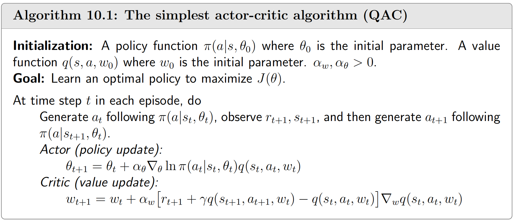

📜 引言
该章节记录了 Actor-Critic 架构的相关内容
我们在前面的讨论中得知 Policy Gradient 算法的更新策略为
θt+1=θt+α⋅Qt(st,at)∇θlogπ(at∣st,θt) 这不仅要求我们直接对策略 θ 进行更新（Policy Gradient）还需要对 Qt(st,at) 有所估计。
- 当我们使用MC算法估计 Qt(st,at) ，这就是最简单的 REINFORCE 算法
- 当我们使用TD算法估计 Qt(st,at)，这就是我们需要讨论的 AC 算法
🧩 经典算法
QAC 算法

该算法非常简单，充分结合了 Q learning 和 policy gradient 的思想。但是存在训练方差过大的现象，容易导致训练不稳定。
我们考虑 Actor 的更新问题，我们使用
Qt(st,at)∇θlogπ(at∣st,θt)≈E[∇θlogπ(A∣S,θ)Qπ(S,A)] 我们将 Qt(st,at)∇θlogπ(at∣st,θt) 看作一个随机变量 X，则 Var(X) 越大，SGD就越不稳定。
从理论的角度来分析，假如我们将形式修改成
θt+1=θt+α⋅[Qt(st,at)−b(S)]∇θlogπ(at∣st,θt) 💡
这里之所以能这么做，有
E[∇θlogπ(A∣S,θ)b(S)]=0 证明显然，展开即可。
当我们将形式修改成上式后，我们分析其方差
mintr[Var(X)]=min{E[X⊤X]−xˉ⊤xˉ} 最终可以得到
b∗(s)=EA∼π[∥∇θlnπ∥22]EA∼π[∥∇θlnπ∥22⋅Qπ(s,A)],s∈S. 当由于上式难以获取，于是我们退而求其次，采用 b(s)=Vπ(s) 作为 baseline，此时我们称
Aπ(s,a)=Qπ(s,a)−Vπ(s) 为优势函数。
A2C 算法

注意到我们将优势函数用
Aπ(st,at)≈rt+1+γVt(st+1)−Vt(st) 来近似表示，所以这依旧是一个 SGD 算法。同时模型也仅需要训练一个 critic。
Off-policy AC based on importance sampling
A2C 和 QAC 都是 on-policy 算法，它对于数据的利用非常差，需要花费大量的时间用于轨迹采集。我们可以使用 importance sampling 技术将其改进成 off-policy。
引入新的策略 β，此时有
Theorem 10.1 (Off - policy policy gradient theorem)
In the discounted case where γ∈(0,1) , the gradient of J(θ) is∇θJ(θ)=ES∼ρ,A∼βimportance weightβ(A∣S)π(A∣S,θ)∇θlnπ(A∣S,θ)Qπ(S,A) where the state distribution ρ is
ρ(s)≐s′∈S∑dβ(s′)Prπ(s∣s′),s∈S where Prπ(s∣s′)=∑k=0∞γk[Pπk]s′s=[(I−γPπ)−1]s′s is the discounted total probability of transitioning from s′ to s under policy π.
证明请见 参考文献 1 - Box 10.2
算法描述

可以看到 actor 和 critic 都使用了重要性采样。
📋 参考文献
- 强化学习的数学原理 - 赵世钰
https://github.com/MathFoundationRL/Book-Mathematical-Foundation-of-Reinforcement-Learning
{kind=link}